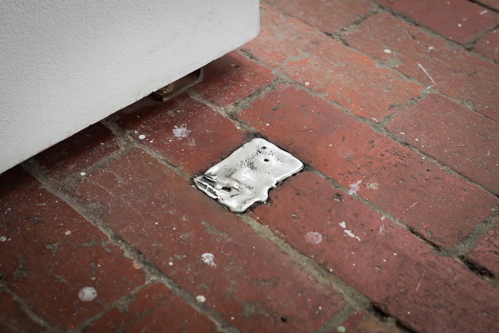

Archive / Artwork
Fifteen billion, nine hundred and twenty million particles
- When
- 2018 - ongoing
- Venue
- c3 Contemporary Art Space
- Material
- Pewter, holes in gallery brick floor, conversations.
- Collaborator
- Torie Nimmervoll
Project overview
Conceived for the 10th birthday celebrations for the gallery, this work speaks to the physical, intellectual and emotional labour that artists and arts workers in the ARI sector invest into long-term projects, often at a cost disproportionate to remuneration.

Artist statement
Fifteen billion, nine hundred and twenty million particles of Jon Butt!
Using a basic calculation of how many particles the human body sheds per hour, I calculated how much of my actual physical body may have been invested into creating and sustaining a non-profit art space over a 10 year project, coming up with the arbitrary figure of fifteen billion, nine hundred and twenty million particles of Jon Butt!
The decision to memorialise this investment came out of many conversations with artists and co-workers at c3, where we noted that many of us contribute huge amounts of invisible, unpaid labour to create a space for experimental practice to thrive (when traditional forms of funding or investment fails). This invisible labour is often discretely hidden, never discussed publicly in favour of presenting a professionalised organisational front.
I engaged the help of artist and casting legend Torie Nimmervoll to help create a discrete intervention in the gallery space. Through discussions with Torie, we decided not to use an expensive institutional material (bronze) in favour of a low-melt alloy pewter that we could smelt onsite and cast in the classic ARI DIY fashion. Torie and I spent a day bent over a dodgy camp stove, smelting the alloy in a milk jug and chatting about the lifecycle of the gallery, laughing about the often strange, intense and poignant moments remembered, while pouring molten metal into a series of construction scars in the original brick floors. These holes (tripping hazards in OH+S terms) became filled with what we estimated to replicate, the mass of my fifteen billion, nine hundred and twenty million particles in pewter.
In 2021, when c3 was closed permanently, a victim of COVID-19 pandemic financials, a number of the pewter ingots were hacked out of the ground by an anonymous worker at the Convent and gifted back to me in a beautiful gesture of resistance against the closure of the gallery by organisational decisions.